Multiple Linear Regression
EES 4891/5891
Probability & Statistics for Geosciences
Jonathan Gilligan
Class #21: Sunday, March 30 2025
Getting Started
Getting Started
- Accept the GitHub Classroom assignment at https://classroom.github.com/a/bLbQzGpS
Learning Goals
Learning Goals
- Understand multiple linear regression and its relation to simple linear regression
- Understand how to use multiple linear regression to fit a polynomial or harmonic model to data
- Understand how to assess the quality of a multiple-regression model:
- How to decide which of two models describes your data better
- Understand the bias-variance tradeoff,
- How it relates to the problem of over-fitting models
- Why overfit models look great on your data, but make poor predictions of new observations
- Understand how to use information criteria (AIC, BIC, etc.) to compare models
- Understand how to use resampling methods to assess models:
- Leave-one-out cross-validation
- \(k\)-fold cross-validation
- Bootstrapping
Multiple Linear Regression
Multiple Linear Regression
- Basic linear regression:
Single dependent variable
-
Single predictor (independent variable)
\[ y_i = \beta_0 + \beta_1 x_i + \varepsilon_i \]
- Multiple regression:
Single dependent variable
-
Multiple predictors (independent variables)
\[ y_i = \beta_0 + \sum_{j = 1}^p \beta_j x_{i,j} + \varepsilon_i \]
-
Statistical significance:
- Null hypothesis: \(H_0: \beta_j =
0\)
- Test probability that we could see this data \((y_i, x_{i,j})\) if \(H_0\) were true.
- Null hypothesis: \(H_0: \beta_j =
0\)
-
Multivariate ANOVA
Source df SS MS F Total \(N - 1\) \(\mathrm{SST}\) Regression \(p\) \(\mathrm{SSR}\) \[\mathrm{MSR} = \frac{\mathrm{SSR}}{p} \] \[ \frac{\mathrm{MSR}}{\mathrm{MSE}} \] Residuals \(N - p - 1\) \(\mathrm{SSE}\) \[\mathrm{MSE} = \frac{\mathrm{SSE}}{N - p - 1} = S_\varepsilon^2\]
Example: Keeling Curve for Atmospheric CO2
-
Load data:
-
Regressions:
-
Single
-
Multiple
-
-
Plot data:
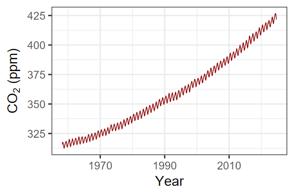
-
Plot data with regressions:
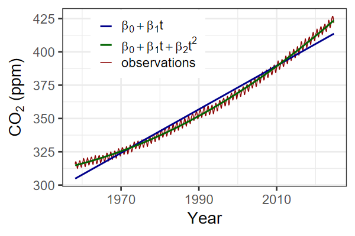
Harmonic Model
- The quadratic model fits the general trend, but what about the
annual cycle that creates the wiggles in the data?
-
Harmonic model:
\[ \begin{align} y_i =& \beta_0 + \beta_1 t + \beta_2 t^2 + \beta_3 \sin(2 \pi t) \\ & + \beta_4 \cos(2 \pi t) \end{align} \]
-
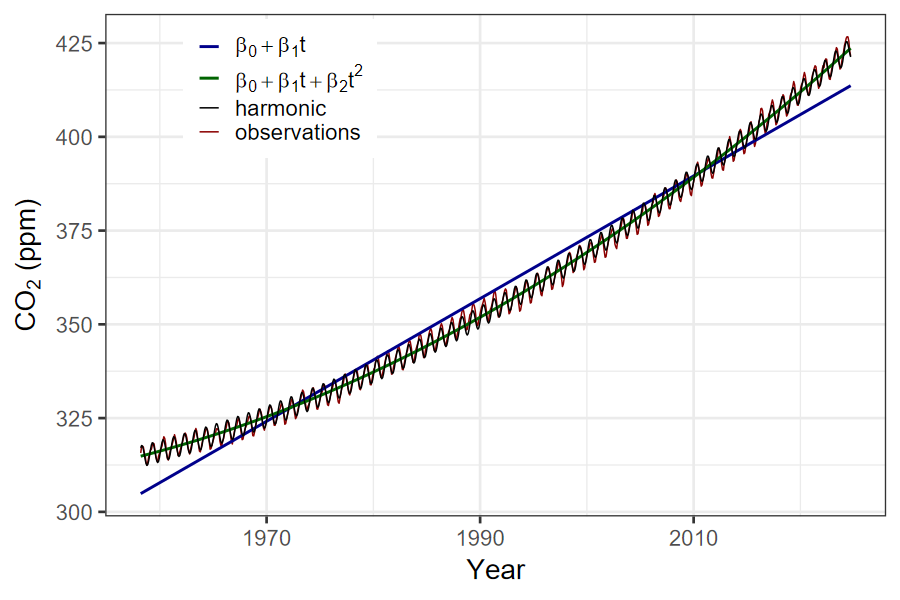
Comparing Models
- How do we decide which linear regression model is best?
- By eye, it’s obvious that the quadratic model is better than the linear one, and the harmonic model is best of all.
- But is there a more systematic way to compare models?
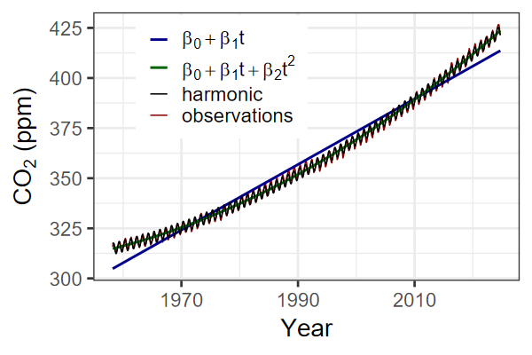
-
Broom library
glance()function:## # A tibble: 3 × 12 ## r.squared adj.r.squared sigma statistic p.value df logLik AIC BIC ## <dbl> <dbl> <dbl> <dbl> <dbl> <dbl> <dbl> <dbl> <dbl> ## 1 0.975 0.975 5.01 31455. 0 1 -2420. 4847. 4861. ## 2 0.995 0.995 2.23 80705. 0 2 -1775. 3557. 3576. ## 3 0.999 0.999 0.947 225556. 0 4 -1088. 2187. 2215. ## # ℹ 3 more variables: deviance <dbl>, df.residual <int>, nobs <int>
Problem
- You can always add more variables to a linear-regression model
- But each variable consumes one degree of freedom.
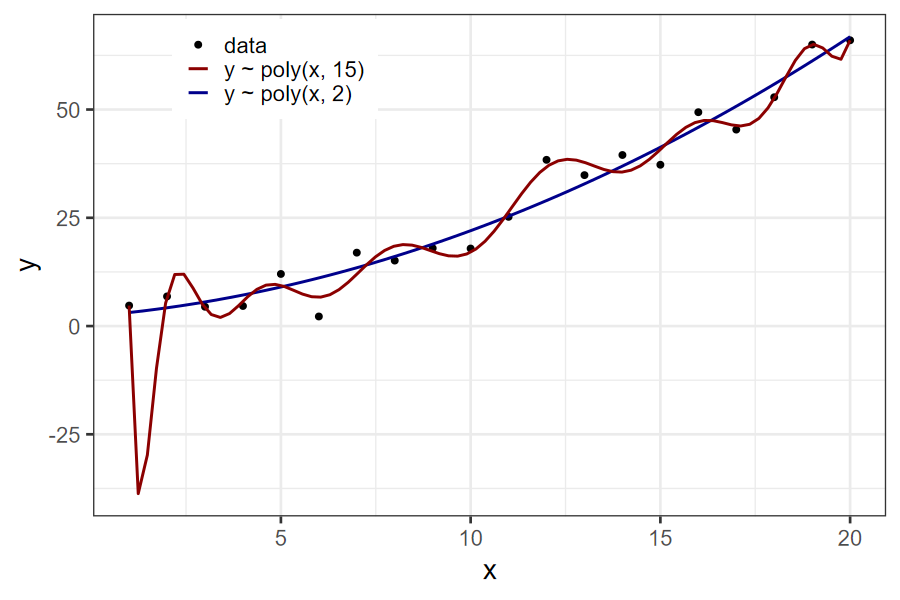
## # A tibble: 2 × 13
## model r.squared adj.r.squared sigma statistic p.value df logLik AIC
## <chr> <dbl> <dbl> <dbl> <dbl> <dbl> <dbl> <dbl> <dbl>
## 1 poly(x, 2) 0.961 0.956 4.32 208. 1.13e-12 2 -56.0 120.
## 2 poly(x, 1… 0.986 0.934 5.28 19.0 5.73e- 3 15 -45.6 125.
## # ℹ 4 more variables: BIC <dbl>, deviance <dbl>, df.residual <int>, nobs <int>What Overfitting Looks Like
-
Let’s make some new data:
Use the original models to predict the new \(y_i\) from the new \(x_i\)
The 15th-degree polynomial fit the original data better than the quadratic, but it is much worse at predicting the new observations.
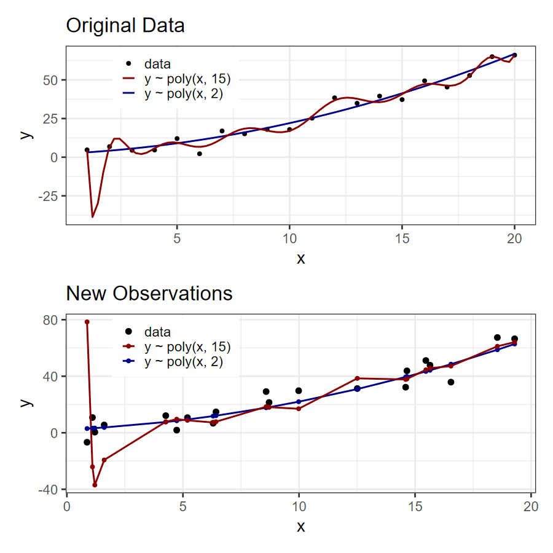
Avoiding Overfitting
Bias-Variance Tradeoff
-
Bias: Average errors of model predictions
- Small bias: smaller errors for current & future data
-
Variance: Variation in errors from one sample to
another.
- Small variance: similar errors for current & future data
- Large variance: errors are worse for future data
- More complex models (more degrees of freedom)
- Less bias (smaller errors in estimating current and future observations)
- More variance (greater errors in predicting new observations)
- Up to some point, addding complexity reduces bias more than it increases variance, so your model gets better at predicting new data.
- Eventually, adding complexity doesn’t reduce bias much, but increases variance a lot, so predictions get worse. (Overfitting your data)
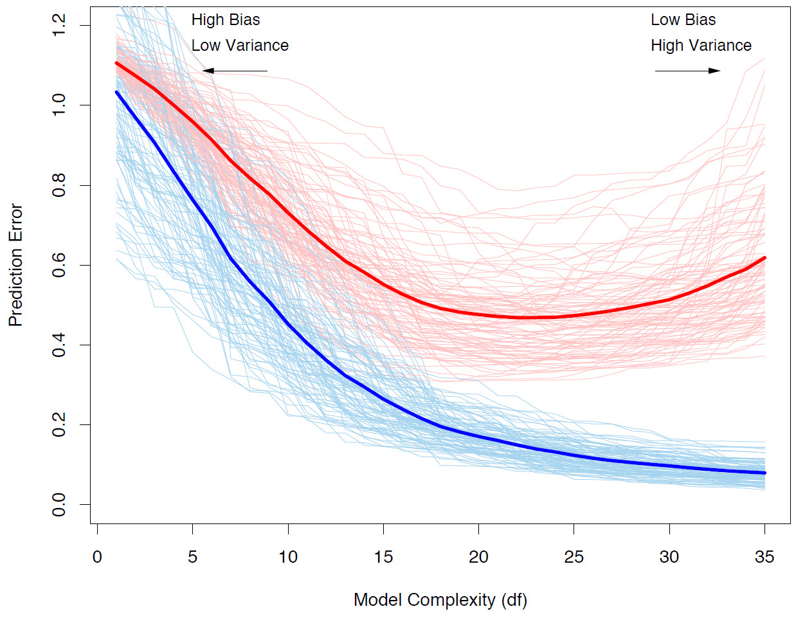
- blue = in-sample error
- red = out-of-sample error
- How do you find the optimum complexity?
Avoiding Overfitting
-
Use AIC or BIC
## # A tibble: 2 × 2 ## AIC BIC ## <dbl> <dbl> ## 1 120. 124. ## 2 125. 142.- AIC and BIC are information criteria that account for the
degrees of freedom used by complex models
- Model comparison: They tell you one model is better or worse than another, but tell you nothing about how good either model is.
- AIC selects the better model
- If you know that one of the models is the “true” model, BIC does better at selecting it.
- AIC is usually the better choice.
- AIC and BIC are information criteria that account for the
degrees of freedom used by complex models
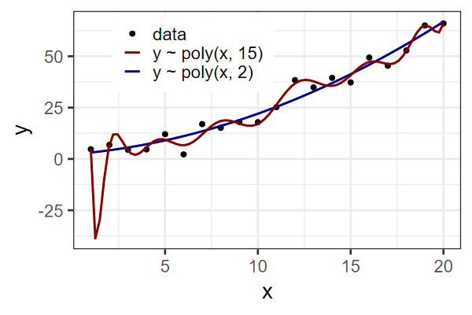
- Cross-validation or bootstrapping are often better than AIC or
BIC for assessing models
- Nonparameteric Resampling Methods
- AIC is asymptotically equivalent to “leave-one-out” cross-validation, (Jackknife resampling) as the sample size gets large.
Testing Models by Resampling
Cross-Validation
- Leave-One-Out (LOO)
- If you have \(N\) observations
\((x_1, y_1), (x_2, y_2), \ldots, (x_N,
y_N)\),
-
Create \(N\) subsets \(Z_1, Z_2, \ldots, Z_N\), where \(Z_i\) has all the observations except \((x_i, y_i)\):
\[ \begin{align} Z_i =& ((x_1, y_1), (x_2, y_2), \ldots, (x_{i-1}, y_{i-1}), \\ & (x_{i+1}, y_{i+1}), \ldots, (x_N, y_N)) \end{align} \]
For each \(Z_i\), fit the parameters of your model to \(Z_i\) and then use that model to predict \(\hat{y}_i\) from \(x_i\).
-
Calculate SSE:
\[ \mathrm{SSE} = \sum_{i = 1}^N \varepsilon_i^2 = \sum_{i = 1}^N (y_i - \hat{y}_i)^2 \]
-
- If you have \(N\) observations
\((x_1, y_1), (x_2, y_2), \ldots, (x_N,
y_N)\),
- Each \(\varepsilon_i\) and
\(\hat{y}_i\) is calculated from a
different set of data: \(Z_i\), which
omits \((x_i, y_i)\).
- This means that we test each prediction on a model fitted to data that doesn’t include it.
- This helps protect us from overfitting.
- The SSE or MSE we estimate from this procedure is the out-of-sample error, not the in-sample error, so it includes the effects of increasing variance when the model uses more degrees of freedom.
- I’ve shown the bivariate version, for simplicity, but you can do the same with multivariate data that has \((x_{i,1}, x_{i,2}, \ldots, x_{i,p}, y_i)\)
k-fold Cross Validation
- If you have large data sets, with many observations (large \(N\)), it can be computationally expensive to fit thousands or millions of models, and LOO cross-validation becomes unfeasible.
- \(k\)-fold cross validation divides your data into \(k\) sets (typically 10), that we call “folds”, where each fold contains \(1/k\) of the observations.
- We make \(k\) subsets \(Z_1, Z_2, \ldots, Z_k\), where \(Z_j\) contains all the folds except \(j\). Thus if \(k = 10\), each fold contains 10% of the data and each \(Z_j\) contains 90%.
- Fit the model parameters to each \(Z_j\) and use it to predict \(\hat{y}_i\) for all \(i\) in the hold-out fold \(j\).
- Add up \(SSE = \sum_i (y_i - \hat{y}_i)^2\)
- LOO is a special case of \(k\)-fold cross-validation, where \(k = N\).
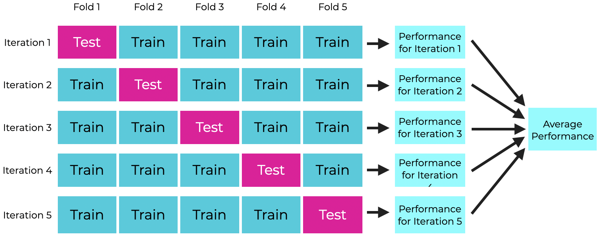
- In each iteration \(j\), train
a model by fitting its parameters to the blue “train” folds
- Test it by predicting the dependent variable \(\hat{y}_i\) in the “test” fold for iteration \(j\).
- Calculate the performance metric for iteration \(j\) by comparing \(\hat{y}_i\) to the observed \(y_i\) in the test fold.
- Sum or average the performance for each fold to get the overall model performance.
Bootstrap Model Validation
- Another approach to model validation is bootstrapping.
- This is different from cross-validation because we randomly sample from the full data set with replacement.
- If my full data set contains \(N\) observations, create \(k\) bootstrap samples \(Z_j\), each of which contains \(N\) random samples from from the full data set, but some of them may be duplicated, and for each duplicated value, one of the original observations will be missing.
- For each \(j\), fit the model
to \(Z_j\) and use it to predict the
original observations that are missing from \(Z_j\).
- Calculate the performance metrics just as you did with \(k\)-fold cross-validation.
-
Example of bootstrap validation:
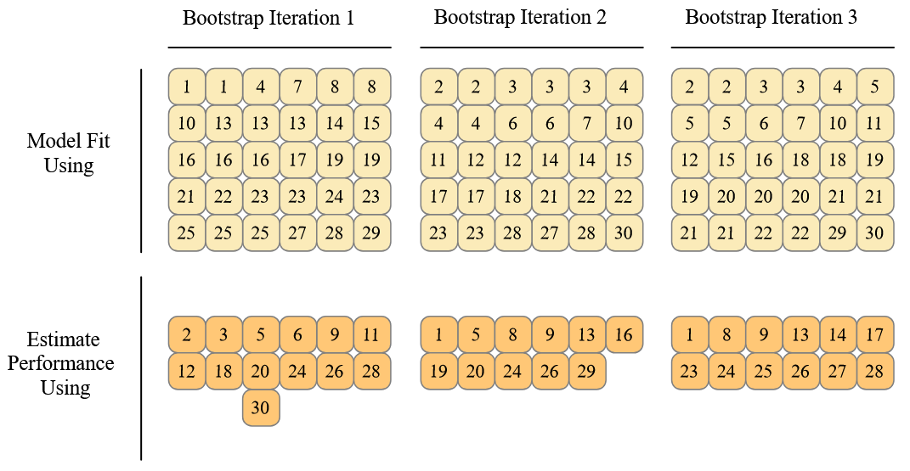
- Suppose there are 30 observations
- Each bootstrap iteration is a random sample of 30 values from the observations, with possible duplications.
- For each iteration, fit the model to the bootstrap sample and predict the observations that are left out.
Testing Models Using R
The tidymodels Package
The
tidymodelspackage in R collects several packages to make it easy to set up systematic workflows for fitting and testing models, and making predictions.-
If you don’t have
tidymodelsinstalled, then install it withLoad
tidymodels: The basic structure of
tidymodelsis to create a workflow, which consists of recipes for preparing the data and defining relationships, and models which are fit using the recipes.
-
We start by loading a simple data set called
biomass:## Rows: 536 ## Columns: 7 ## $ sample <chr> "Akhrot Shell", "Alabama Oak Wo… ## $ HHV <dbl> 20.008, 19.228, 18.299, 18.151,… ## $ carbon <dbl> 49.81, 49.50, 47.82, 45.10, 46.… ## $ hydrogen <dbl> 5.64, 5.70, 5.80, 4.97, 5.40, 5… ## $ oxygen <dbl> 42.94, 41.30, 46.25, 35.60, 40.… ## $ nitrogen <dbl> 0.41, 0.20, 0.11, 3.30, 1.00, 2… ## $ sulfur <dbl> 0.00, 0.00, 0.02, 0.16, 0.02, 0…-
biomassgives the energy content (higher heat value,HHV), and the weight percentages ofcarbon,hydrogen, …,sulfurfor 536 kinds of biomass.
- Source: S.B. Ghugare et al., BioEnergy Research, 7, 691 (2013). DOI: 10.1007/s12155-013-9393-5
-
Plotting correlations
- Before we start making models, it’s helpful to plot what our data
look like.
For multivariate data, it’s helpful to plot correlations using pairs plots.
-
The
GGallypackage has a nice pair plotting function that works withggplot, so let’s installGGallyif it’s not already installed.

Using Pair Plots for Modeling
-
From the pair plot, we can see which elements are strongly correlated with HHV:
- Carbon, Oxygen, and to a lesser extent, Hydrogen and Nitrogen.
-
Let’s try some models out:
\[ \begin{array}{lrcl} 1. & \mathrm{HHV} &=& \beta_0 + \beta_C\: \mathrm{C} + \varepsilon \\ 2. & \mathrm{HHV} &=& \beta_0 + \beta_C\: \mathrm{C} + \beta_H\: \mathrm{H} + \varepsilon \\ 3. & \mathrm{HHV} &=& \beta_0 + \beta_C\: \mathrm{C} + \beta_O\: \mathrm{O} + \varepsilon \\ 4. & \mathrm{HHV} &=& \beta_0 + \beta_C\: \mathrm{C} + \beta_O\: \mathrm{O} + \\ & & & \beta_H\: \mathrm{H} + \varepsilon \\ 5. & \mathrm{HHV} &=& \beta_0 + \beta_C\: \mathrm{C} + \beta_O\: \mathrm{O} + \\ & & & \beta_H\: \mathrm{H} + \beta_N\: \mathrm{N} + \varepsilon \\ 6. & \mathrm{HHV} &=& \beta_0 + \beta_C\: \mathrm{C} + \beta_O\: \mathrm{O} + \\ & & & \beta_H\: \mathrm{H} + \beta_N\: \mathrm{N} + \beta_S\: \mathrm{S} + \varepsilon \end{array} \]
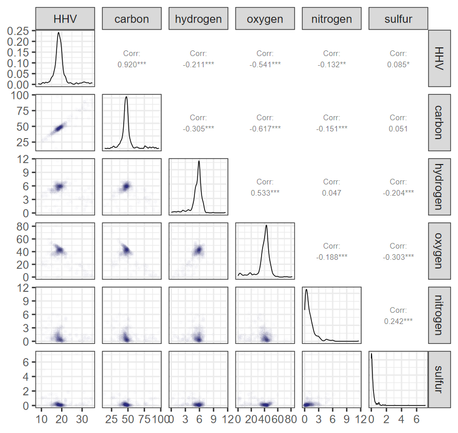
Using tidymodels
-
Create the recipes, each of which has a model specification formula
set.seed(12345) rec_1 <- recipe(biomass, HHV ~ carbon) rec_2 <- recipe(biomass, HHV ~ carbon + hydrogen) rec_3 <- recipe(biomass, HHV ~ carbon + oxygen) rec_4 <- recipe(biomass, HHV ~ carbon + oxygen + hydrogen) rec_5 <- recipe(biomass, HHV ~ carbon + oxygen + hydrogen + nitrogen) rec_6 <- recipe(biomass, HHV ~ carbon + oxygen + hydrogen + nitrogen + sulfur) recipes <- list(c = rec_1, ch = rec_2, co = rec_3, coh = rec_4, cohn = rec_5, cohns = rec_6) -
The model is an engine for fitting parameters for a formula from the recipes
-
Create a set of workflows, each of which has a recipe and a model engine
-
Now we create a k-fold cross-validation framework for testing the models
-
And we fit all the models using the 10-fold cross-validation:
-
workflow_mapfits each model inrecipesto the training set in each fold ofk_fold, using the regression-model engine fromlm_mod. save_predmeans to save the predictions from the modelsallow_parmeans to attempt to speed up the calculations by using parallel processing if the CPU has multiple cores.
-
Results of Cross-Validation
- Inspect the results of the cross-validation:
## # A tibble: 12 × 9
## wflow_id .config preproc model .metric .estimator mean n std_err
## <chr> <chr> <chr> <chr> <chr> <chr> <dbl> <int> <dbl>
## 1 c_lm Preprocessor1_… recipe line… rmse standard 1.41 10 0.169
## 2 c_lm Preprocessor1_… recipe line… rsq standard 0.856 10 0.0349
## 3 ch_lm Preprocessor1_… recipe line… rmse standard 1.40 10 0.174
## 4 ch_lm Preprocessor1_… recipe line… rsq standard 0.856 10 0.0354
## 5 co_lm Preprocessor1_… recipe line… rmse standard 1.42 10 0.169
## 6 co_lm Preprocessor1_… recipe line… rsq standard 0.852 10 0.0347
## 7 coh_lm Preprocessor1_… recipe line… rmse standard 1.43 10 0.185
## 8 coh_lm Preprocessor1_… recipe line… rsq standard 0.849 10 0.0380
## 9 cohn_lm Preprocessor1_… recipe line… rmse standard 1.44 10 0.188
## 10 cohn_lm Preprocessor1_… recipe line… rsq standard 0.848 10 0.0385
## 11 cohns_lm Preprocessor1_… recipe line… rmse standard 1.43 10 0.185
## 12 cohns_lm Preprocessor1_… recipe line… rsq standard 0.847 10 0.0382- The best fits should have:
- Smallest RMSE
- Largest R2
- There isn’t a lot of difference between the models
- But both RMSE and R2 agree that the C+H model is best, and the pure C model is 2nd best.
- The models with three, four, or five elements are overfit.
-
We can clean this up:
metrics |> filter(.metric == "rmse") |> select(wflow_id, .metric, mean, n, std_err) |> mutate(mean = num(mean, digits = 4)) |> arrange(mean)## # A tibble: 6 × 5 ## wflow_id .metric mean n std_err ## <chr> <chr> <num:.4!> <int> <dbl> ## 1 ch_lm rmse 1.3980 10 0.174 ## 2 c_lm rmse 1.4087 10 0.169 ## 3 co_lm rmse 1.4154 10 0.169 ## 4 coh_lm rmse 1.4302 10 0.185 ## 5 cohns_lm rmse 1.4350 10 0.185 ## 6 cohn_lm rmse 1.4357 10 0.188metrics |> filter(.metric == "rsq") |> select(wflow_id, .metric, mean, n, std_err) |> mutate(mean = num(mean, digits = 4)) |> arrange(desc(mean))## # A tibble: 6 × 5 ## wflow_id .metric mean n std_err ## <chr> <chr> <num:.4!> <int> <dbl> ## 1 ch_lm rsq 0.8562 10 0.0354 ## 2 c_lm rsq 0.8559 10 0.0349 ## 3 co_lm rsq 0.8525 10 0.0347 ## 4 coh_lm rsq 0.8491 10 0.0380 ## 5 cohn_lm rsq 0.8481 10 0.0385 ## 6 cohns_lm rsq 0.8473 10 0.0382
Looking Ahead with tidymodels
-
tidymodelsis a very powerful package.- Here, we used 10-fold cross-validation to compare 6 different linear-regression models
- We could also use it to compare different kinds of models:
- linear regression
- general linear models
- random forest models
- support-vector machines
- artificial neural networks
- …
- For sophisticated machine-learning algorithms,
-
tidymodelsallows us to automatically tune parameters of the algorithm to find values that produce the best model fits to our data -
tidymodelsallows us to do feature engineering to identify the best variables in our data to use for modeling, and to explore creating new variables by transforming or combining the original variables
-
General Pattern for tidymodels
Analysis
- All these fancy methods, the structure remains the same:
- Create recipes that define model formulas, transform variables, and combine variables to create new ones.
- Select model engines that fit parameters to the formulas from the recipes
- Combine recipes and models into workflows
- Optionally, generate resample sets, such as bootstrap or k-fold cross-validation sets
- Run the workflows on your original data or the resample sets to fit models, make predictions, and evaluate test metrics
- Analyze the output